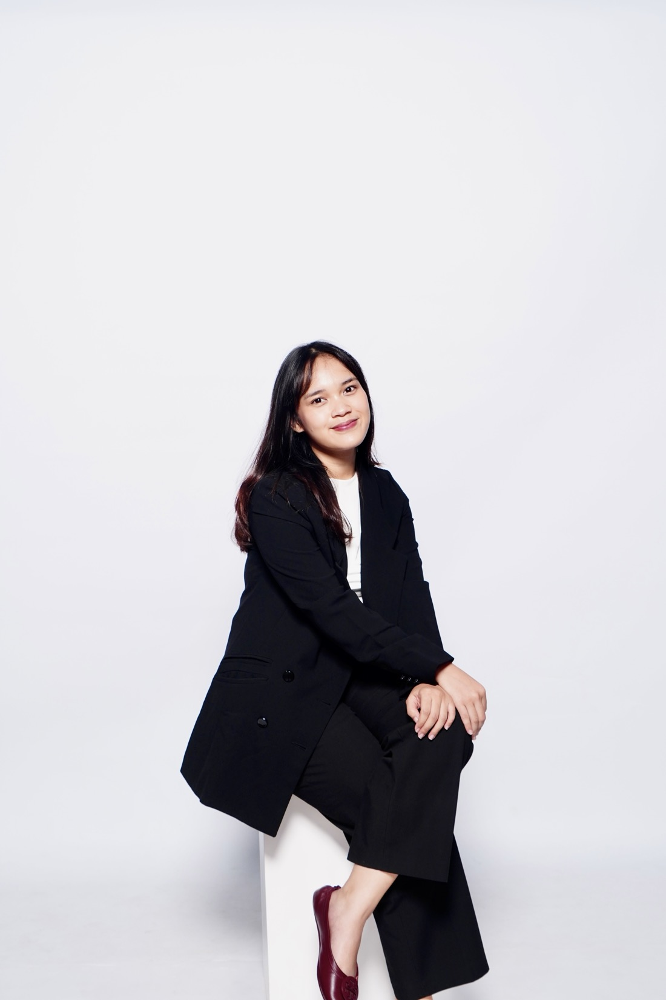
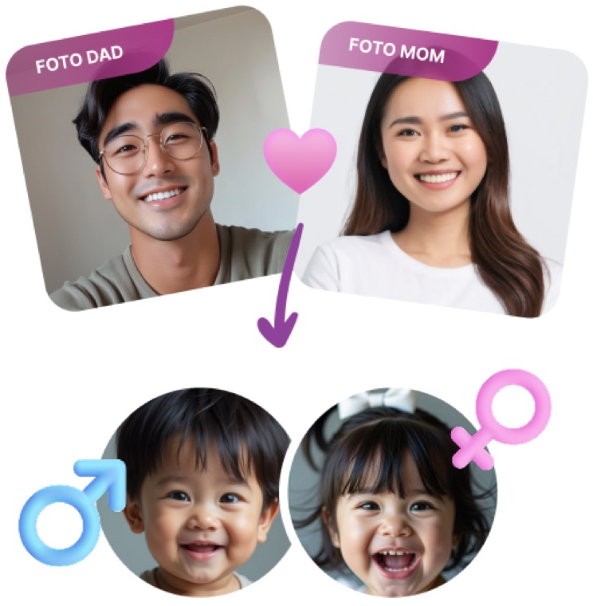

Rania Rizqika · Digital Marketer
SEO & Content.
Paid Media.
Hi, I’m Rania. I develop content strategies and manage paid campaigns to help brands reach the right people and turn interest into action.

A Few Brands I’ve Worked With
01 / Selected Work
Selected Projects.
Browse my work across SEO, content, and paid media.
Showing all 5 projects.

Maternal Health & Nutrition
PRENAGEN
Content that answers pregnancy and motherhood questions.
My Work Keyword Research · Briefs · Editing · Content Optimization · Website Audit

Travel & Hospitality
Ascott
Destination content and property page copy.
My Work Content Planning · Briefs · Editing · Keyword Research · SEO Copywriting

Wildlife & Visitor Experiences
Taman Safari
Reaching new readers through wildlife content.
My Work Non-Branded Keywords · Content Ideas · Briefs · Editing · Page Optimization

Handmade Leather Goods
Havara Studio
Meta Ads campaigns for WhatsApp and Instagram leads.
My Work Campaign Planning · Creative Selection · Setup · Budget Allocation · Optimization

Education & Career Development
Boleh Belajar
Keyword strategy, ad copy, and campaign optimization.
My Work Keyword Strategy · Ad Copywriting · Testing · Budget Reallocation
02
About Me
I’m Rania Rizqika, a digital marketer with experience in SEO, content strategy, and paid media. I combine data with an understanding of the customer journey to make marketing decisions that support business growth.
I’ve worked with brands across health, hospitality, wildlife, retail, and education.
Content
Media